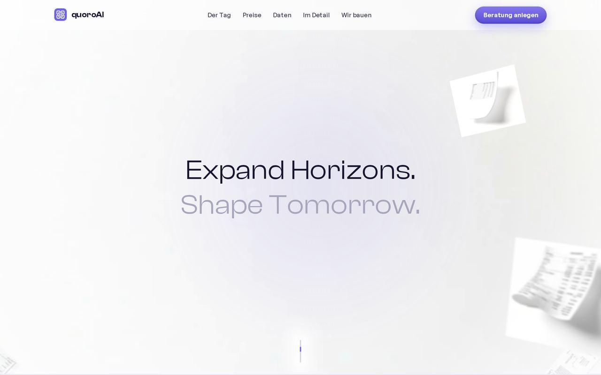
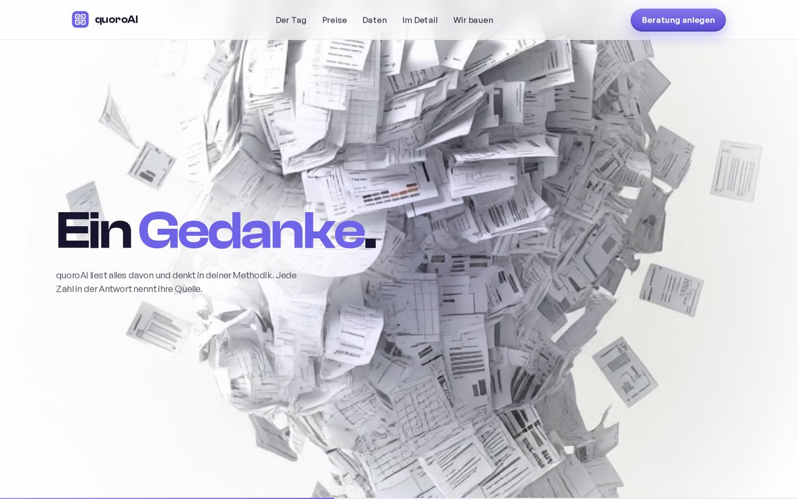
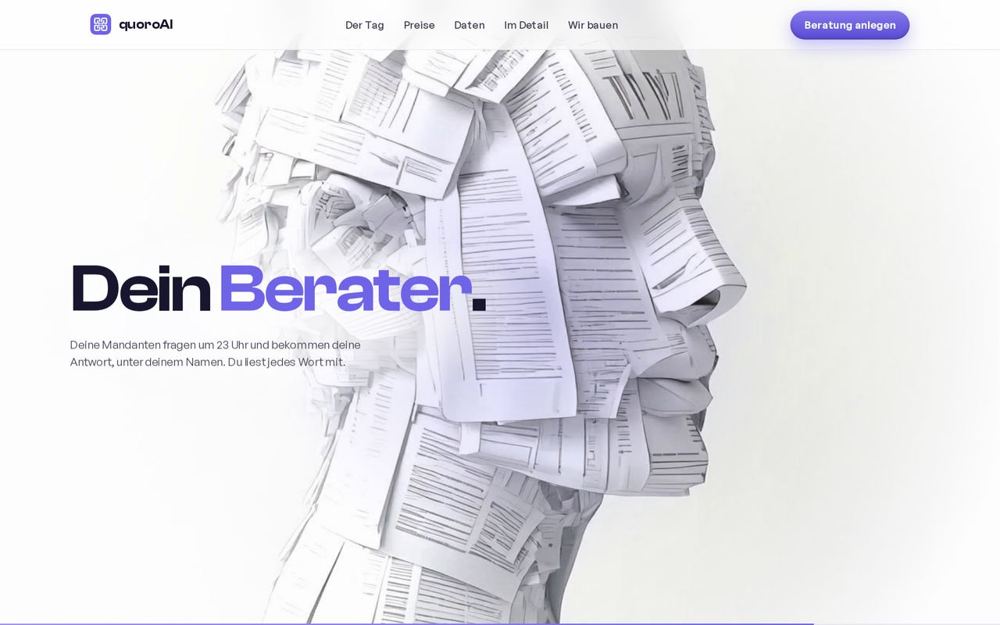
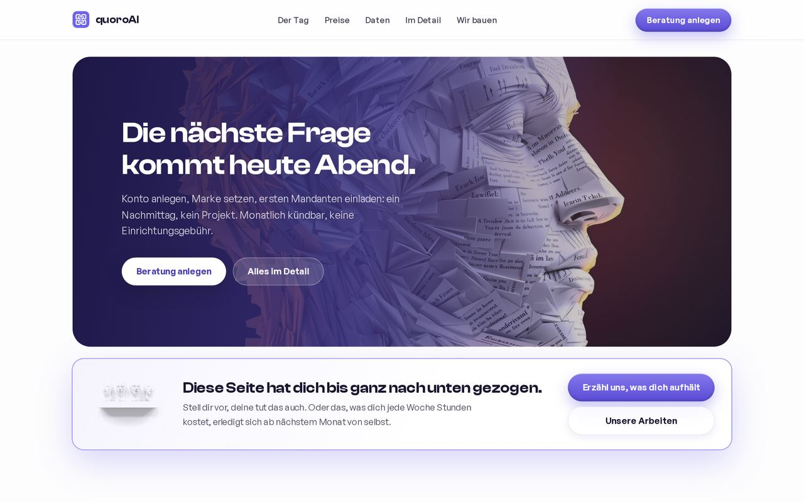
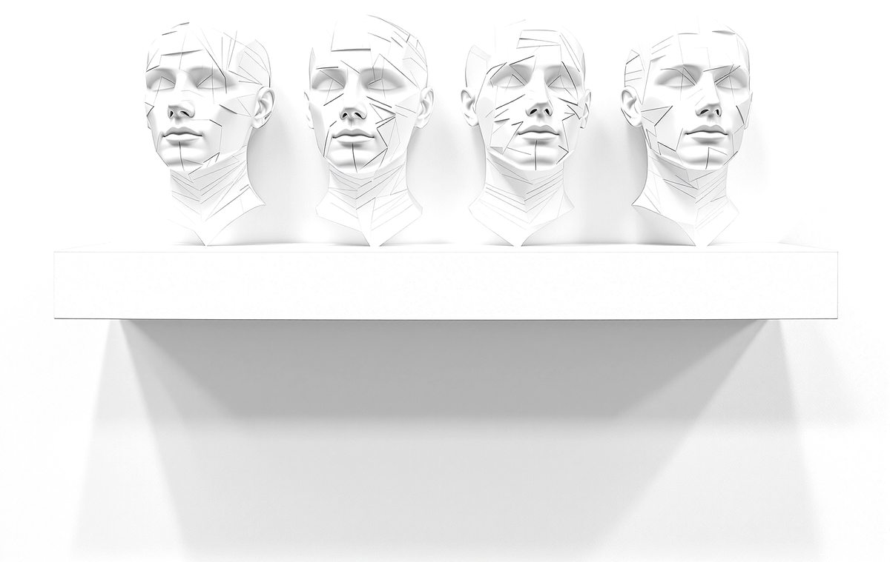

Gebaut, nicht versprochen.
Drei Werke der Werkstatt, im Vorbeiziehen. Anhalten lohnt sich.
WERK 1: DIE PLATTFORM


 Die Tour ansehen
Die Tour ansehen
Die Plattform für Beratungen.
Ein Berater unter fremder Marke, samt Mandaten, Zeiten und tagegenauer Abrechnung. Daten in der EU.
WERK 2: DIESE WEBSITE
 Noch einmal erleben
Noch einmal erleben




Die Seite, von der du kommst.
Der Kopf aus tausend Belegen, die Drehung, der Tag bis 23:04. Jede Bewegung aus der eigenen Werkstatt.
WERK 3: DIE BILDWERKSTATT


 Bildwelt anfragen
Bildwelt anfragen

Die Bildwerkstatt dahinter.
Motive und Filme in Stunden statt Wochen. Dieselbe Werkstatt baut die Bildwelt deiner Marke.
Dein Projekt könnte das nächste Werk sein.
Erzähl uns, was dich aufhält.
Eine Mail genügt.
Du bekommst keine Broschüre zurück, sondern eine Einschätzung und einen Vorschlag für den ersten Wurf.
Lieber direkt reden?
Ruf an oder schreib. Wir sagen dir ehrlich, ob sich dein Vorhaben lohnt.